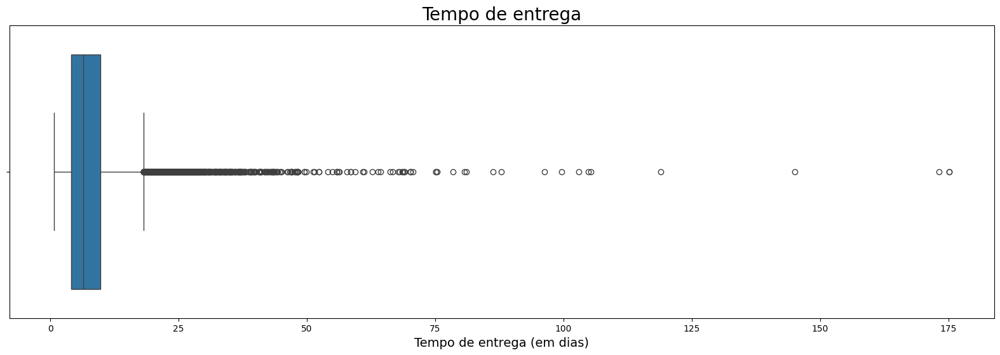
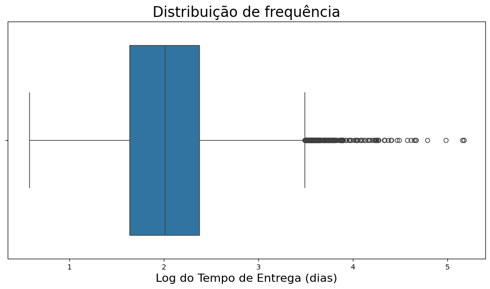
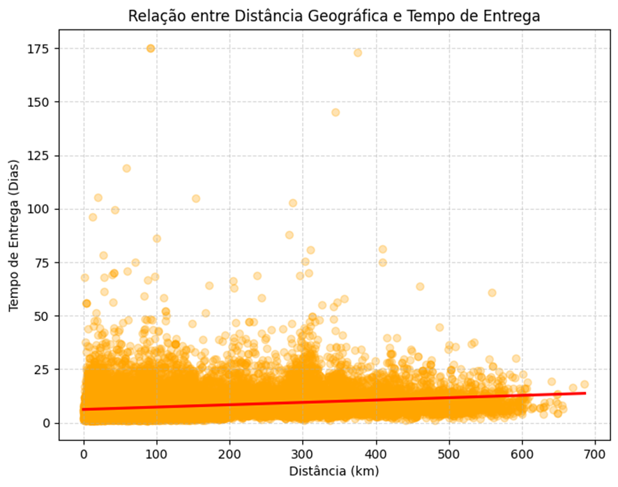
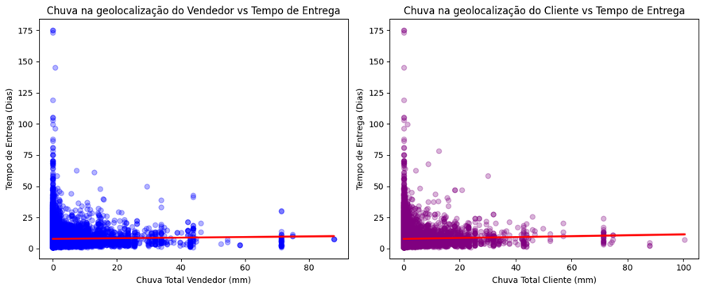
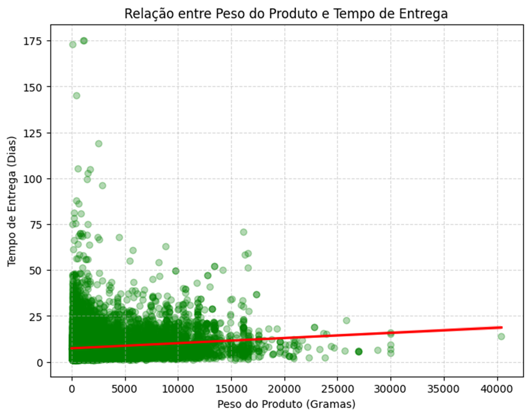
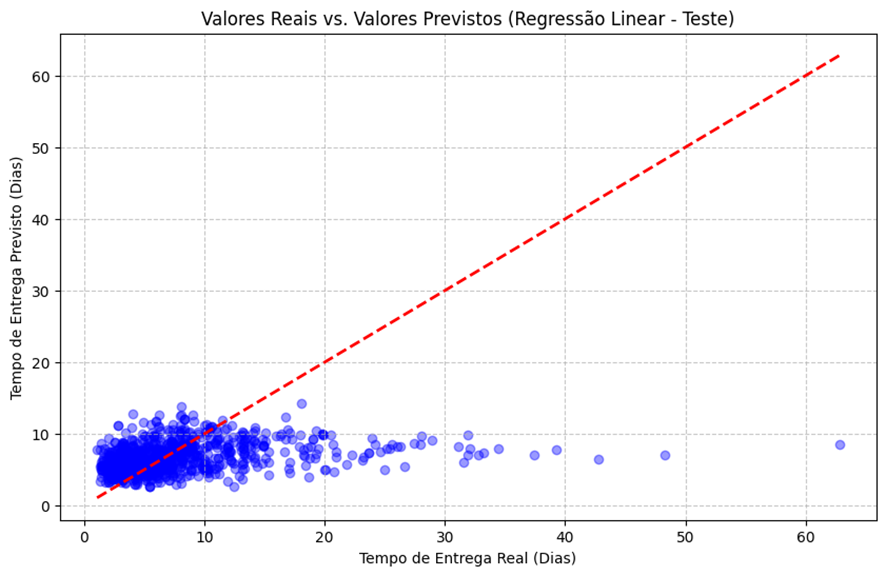
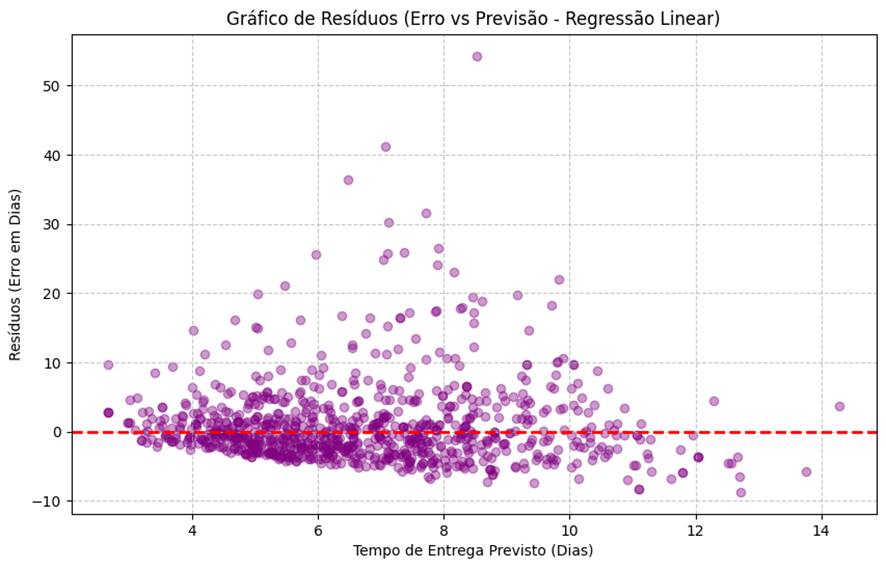

Objetivo
O objetivo central é prever a variável dependente delivery_time_days, que representa o tempo total de entrega em dias.
Equação da Regressão Múltipla
Y = β₀ + β₁X₁ + β₂X₂ + ... + βₙXₙ + ε
Onde Y é o delivery_time_days e Xₙ são os fatores climáticos e logísticos.
Variáveis Independentes (Features)
As variáveis foram selecionadas para evitar redundância e vazamento de dados:
'seller_max_wind_gust_period_ms', 'customer_total_rainfall_period_mm',
'customer_max_wind_gust_period_ms', 'seller_accumulated_rainfall_3_days_mm',
'customer_accumulated_rainfall_3_days_mm']
Distribuição da Variável Dependente
Original

Aplicando Log

Comparativo de Performance por Split
75% Treino / 25% Teste
| Modelo | R² Treino | R² Teste | MAE Teste | RMSE Teste | MAPE Teste |
|---|---|---|---|---|---|
| Linear | 0.0812 | 0.0862 | 3.6044 | 5.5948 | 64.94% |
| Log-Log | 0.1860 | 0.1439 | 3.7187 | 6.0277 | 61.11% |
60% / 20% / 20%
| Modelo | R² Treino | R² Val | R² Teste | MAE Teste | MAPE Teste |
|---|---|---|---|---|---|
| Linear | 0.0695 | 0.0880 | 0.0881 | 3.6205 | 67.28% |
| Log-Log | 0.1666 | 0.2025 | 0.1576 | 3.6870 | 57.72% |
70% / 15% / 15% (MELHOR MODELO)
| Modelo | R² Treino | R² Val | R² Teste | MAE Teste | MAPE Teste |
|---|---|---|---|---|---|
| Linear | 0.0779 | 0.0847 | 0.0846 | 3.6087 | 65.77% |
| Log-Log | 0.1940 | 0.1744 | 0.1407 | 3.6134 | 55.28% |
80% / 10% / 10% (OVERFITTING)
| Modelo | R² Treino | R² Val | R² Teste | MAE Val | MAE Teste |
|---|---|---|---|---|---|
| Linear | 0.0777 | 0.0860 | 0.0844 | 3.6061 | 3.6044 |
| Log-Log | 0.2091 | 0.1709 | 0.1358 | 4.0464 | 3.7187 |
Observação: O split 70/15/15 obteve o menor erro médio real (3.61 dias). O split 80/10/10 demonstrou instabilidade, "decorando" o treino mas falhando na validação.
Análise dos Fatores de Influência
Distância vs Tempo (Fator Crítico)
É a variável com correlação mais clara e consistente: distâncias maiores exigem invariavelmente mais dias de trânsito.

Chuva vs Tempo
Apresenta correlação positiva, porém leve. Curiosamente, os atrasos extremos (outliers) ocorreram em dias de pouca chuva, indicando que o clima não é o único causador de crises logísticas.

Peso do Produto vs Tempo
Existe uma tendência de que pacotes mais pesados levem mais tempo, mas o efeito não é linear: produtos de peso médio apresentaram variações de tempo maiores que os muito pesados.

Avaliação e Limitações
O modelo apresenta dificuldade em lidar com atrasos extremos. Quando uma entrega real demora 40-60 dias, o modelo tende a prever valores próximos a 10 dias, subestimando o prazo.


Conclusão
- A relação dos dados não é estritamente linear, apresentando muito ruído e variações complexas.
- O modelo Log-Log na divisão 70/15/15 é o mais equilibrado para esta base.
- É recomendável a exploração de algoritmos de árvores, como Random Forest. Pois são menos sensíveis que a regressão linear em relação a outliers.